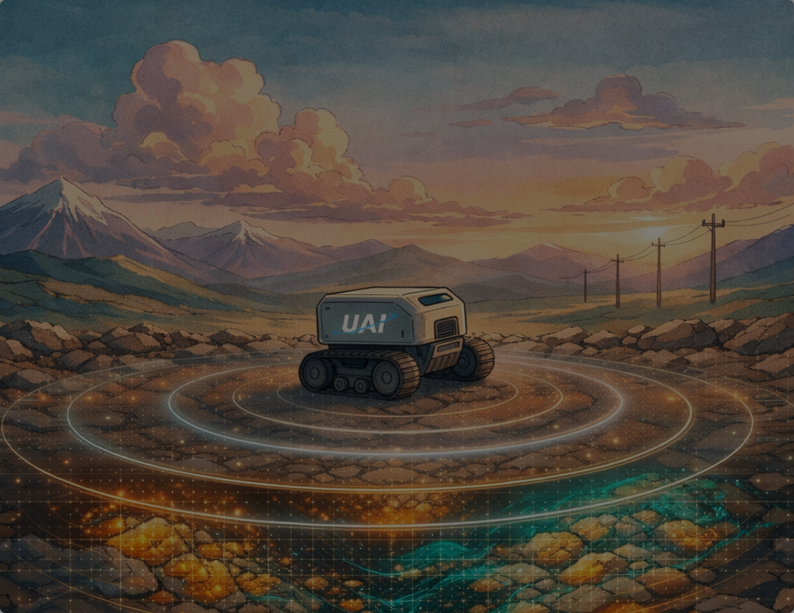

A new chapter in mineral exploration is here.
Autonomous robots with multi-modal sensing that collapse the longest, most expensive stage of the mining pipeline — field exploration.
Spot Robot
Cave Environment
— Extract from video —
Cave Environment
— Extract from video —
Underground exploration in hazardous environment
CA, North America
Drone + Spot Swarm
Snow Environment
— Extract from video —
Snow Environment
— Extract from video —
Swarm capabilities in action in extreme weather
CA, North America

Terrain exploration and geospatial discovery
BLR, India